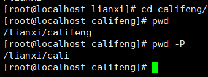

linux基本命令
Linux网络设置
- 桥接bridge:本地连接（有线网卡）、无线网络，，，相当于通过一个交换机通信
- NAT：
- host-only（仅主机模式）：只和真实机器VMnet1通信，不能和其他的主机通信
配置ip地址（临时配置ip,重新启动会使ip地址失效）
- ip address add 192.168.20.24/24 dev eth0 —-》不会覆盖原来的ip地址，一个网卡可以有多个ip,推荐使用
- 给eth0这个网卡配置ip地址192.168.20.24，子网掩码为255.255.255.0
- ifconfig (centos7 使用yum install net-tools)
- 直接ifconfig查看ip地址
- ifconfig eth0 192.168.20.24/24配置ip地址 —》会覆盖原来的ip地址
ip addresss /ip add
- 查看ip地址
- etho0:代表第一块网卡 Ethernet 以太网（局域网)
- etho1:代表第二块网卡
Linux命令的分类
- Linux命令：
- 用户实现某一类功能的指令或程序
- 命令的执行依赖于解释器程序（例如:/bin/bash）
- shell –解释器程序，shell也是程序
- shell是任何机器进行交互的桥梁工具（中间人）
- shell是一类解析程序的统称
- cat /etc/shells —查看Linux中的shell类型

- /bin/sh
/bin/bash —-linux默认的shell(centos ,redhat,ubuntu)
/sbin/nologin
/usr/bin/sh
/usr/bin/bash
/usr/sbin/nologin
- 查看Linux中默认的shell类型
- echo $SHELL
- cat /etc/shells —查看Linux中的shell类型
- shell的作用
- 帮助我们在Linux里找到输入的命令
- 帮助执行

- 内核：linux 的内核：Linux系统里最核心的软件
- 内核有什么作用：和硬件打交道
- 对cpu进行调度管理
- 对内存进行分配管理
- 对进程进行管理
- 对磁盘文件系统进行管理
- 对其他硬件进行管理

- shell的工作步骤
- 各种shell的差异？
- 默认情况下：
- bash、sh
- 只要用户登录系统，系统就会给你分一个shell，让你使用，接收用户输入的内容
- 各个shell在功能上有差异：
- 颜色效果
- 命令补齐
- 历史记录
- …
- 默认情况下：
- 退出shell
- exit
- Linux命令的分类
- 内部命令：属于shell解释器的一部分
- shell本身自带的命令，安装shell相关的程序就有，不需要额外安装其他的软件
- 外部命令：独立于shell解释器之外的程序文件
- 需要安装额外的程序
- 内部命令：属于shell解释器的一部分

ping
- 检测两台电脑之间能否通信
- 发现ping不同，查看ip add发现eth0 网卡被禁用
ifup eth0
激活启用网卡eth0，
再就可以配ip地址，ip address add 192.168.20.24/24 dev eth0
ping 192.168.20.23 测试是否可以和192.168.20.23通信
查看系统里的语言编码格式
locale
echo $LANG
查看Linux系统的版本
- cat /etc/redhat-release
ps1
- 含义：第一提示符/主提示符 prompt symbol 1
- [登录用户@主机名 工作目录]
- [] :只是符号
- root :代表登录Linux系统的用户名
- –》root是Linux的超级管理员
- @ :分割符号
- ~：代表你当前所在位置是家目录（宿主目录）
- 家目录：用户登录系统时候，进入的文件夹（目录）
- /root：root 用户的价目在/root目录
- 家目录：用户登录系统时候，进入的文件夹（目录）
- 辅助提示符
- #：代表当前用户是root用户
- $：代表当前登录用户是普通用户
PS2:
第二提示符
<
hostname
查看主机名 hostname
localhost.localdomain —完整的域名
- 机器名有什么用？
- 日常中很多服务器，服务器之间作用又不一样，所以通过给不同的服务器起不同的名字来区分
- 起名字有什么讲究？
- 名.姓
- www.baidu.com 完整的域名（domain）
- baidu.com 是域名 —>需要购买
- www 是这个域里的一个名字 —》具体某台主机的名字
- mail.qq.com —-》DNS域名解析系统 —>IP
- 名.姓
- 机器名有什么用？
临时性设置/修改主机名：
- hostname biubiu 要重新启动系统后才会生效
永久性的修改主机名:
centos 6 中
1.vim /ect/sysconfig/network
—vim是Linux下的文本编辑工具（相当于win下的记事本），在命令行中使用
2.HOSTNAME = changsha.com
3.退出并保存
4.重新启动系统
centOS7（centos7 里修改主机名后立马生效）
- vim /ect/hostname
- 退出并保存
su
- 切换用户
- su - root 切换root用户登录系统
useradd
- 增加普通用户 useradd biubiu
- su - biubiu切换到biubiu用户
exit
- 退出用户
命令行的快捷键
tab
命令的自动补齐功能
文件名的补齐（路径的补齐）
Ctrl+c:
强行终止进程
ctrl+l
清屏
pwd
- 查看当前所在路径（你当前在哪个文件夹下）
- 选项
- -l
- -P ：显示真正的路径，不要显示链接的路径
- 
linux下的路径/文件系统层次结构（目录采用树结构，倒立的树）
/:根目录
/etc
/usr
- /usr/lib
- /usr/bin
/var
/lib
/bin
/home
- /home/cali
- /home/cali/docs
- /home/cali/pics
- /home/cali/mp3
- /home/bowe
- /home/brad
- /home/cali
/tmp
绝对路径
不考虑当前路径
从/开始的路径，绝对不会搞错的路径
相对路径
参照当前的路径，前进或是后退到目标文件
cd
- cd 是进入文件夹的意思
- cd 是bash内置的命令 man cd 可以查看
- cd ~cali ：进入cali用户的家目录（用户必须存在）
- cd ~：进入当前用户的家目录
- 直接cd 效果等同于cd ~
- cd -:
- 返回到你上一次所在的路径（文件夹）
ls
列出文件夹里的内容 （list）
- 显示蓝色是文件夹
- 黑色的代表是文件
- 红色的代表压缩文件
- 绿色代表可执行文件（可以运行的文件）
- 脚本文件（存放的都是linux命令）
- 粉红色代表图片
- 浅蓝色代表链接文件
选项
-l : 看到文件详细信息
文件类型（-/d）
-:代表文件类型，是普通的文件
d ：代表文件类型 ，是目录
l :链接文件，指向其他文件
c:字符设备文件(输入字符相关的设备)
b:块设备文件（存储数据的设备文件）
rw-r–r–:权限
- r：可读
- w：可写
- x :可执行
root 第一个root代表文件归root用户所有
root 第二个root代表文件归root组所有
-a :显示所有的文件和文件夹（包括隐藏文件）all
- 任何文件夹内都有.和..这两类特殊的隐藏文件
-A:显示所有的文件夹和文件，但不包含.和..文件
-d :显示目录本身的属性
-R:递归显示内容
-h ：以人类能读懂的方式
- byte字节 = 8 bit
- B字节 b 位
- 工业上计算不是1024，而是1000
选项的格式
- 短格式：-l -a —-》推荐使用短格式
- 长格式: –all
- 效果一样
参数
- （参加进来的操作数（操作对象））
- 没有接参数的时候，默认是当前文件夹
ln
- 创建链接文件的命令
- 链接文件：可以给文件夹和文件都创建
- 链接文件（软链接）相当于win的快捷方式
- ln -s helloworld.sh hw.sh —给helloworld.sh创建一个快捷方式
- 源文件 目标文件（快捷）
- 选项
- -s:符号链接=软链接
- -s:符号链接=软链接
id
- 查看当前登录用户的信息
*chmod *
- chmod +x helloworld.sh –授予文件可执行权限
bash
- bash helloworld.sh 执行脚本
- ./helloworld.sh 执行脚本
别名
别名的作用：方便记忆和使用，提升效果
alias
- 查看系统里的别名
- alias ll=’ls -l –color=auto’
- ll 是别名，是用户自定义的名字，可以不是系统里的命令，建议不要和系统里的命令重复 ,不然会导致原来系统里的命令不可用使用
- ls -l –color=auto 系统里的真正命令
- alias ll=’ls -l –color=auto’
- 设置别名 （临时有效，重启启动系统后会失效）
- alias c=’clear’ —定义c是clear的别名
- alias mm=’mkdir’
unalias
取消别名
unalias c
- 查看系统里的别名
如何让别名永久有效？
- vim /root/.bashrc 或是 vim ~/.bashrc
- alias mv=’mv -i’
- 使修改后的别名定义文件生效
- source ~/.bashrc —执行刚刚修改的定义别名的脚本文件
- 用户重新登录
- 重新启动系统
- source ~/.bashrc —执行刚刚修改的定义别名的脚本文件


mkdir
- 新建文件夹
- man mkdir 查到是user commands
- 选项
- -p :当父文件夹不存在的时候就新建父文件夹
- -p :当父文件夹不存在的时候就新建父文件夹
- mkdir feng{1..10} ：批量创建文件夹
- mkdir shandong/{jinan,qingdao,qufu,dezhou}


rmdir
- 删除空的目录,只能删空文件夹
rm
- rm -rf shangdong/ 强制删除shangdong 文件夹里的所有内容
- rm 删除的文件夹和文件不会存放到回收站，直接删除了
- 所以
- 去使用恢复软件
- 删除东西之前做好备份，不要轻易的删除东西，删除东西之前三思而行
- rm -rf / 千万不能使用
- rm -rf /* 不能使用，会删除根目录下的所有的内容
- 选项
- -r,-R:递归删除，株连九族
- -f :强制删除，不给予提醒
du
wc
touch
date
cp
mv
ln
file
- 查看文件类型
cat
more
less
head
tail
history
which
- 可以查询某个指令存放在哪个地方
- which ls,which mkdir
- which cd 没有找到cd命令的路径
- man cd 查询cd命令的使用手册
- BASH_BUILTINS(1)
- man cd 查询cd命令的使用手册
man 命令
- 查询命令的使用手册
rpm -qf /bin/mkdir
- 通过rpm命令查询/bin/mkdir命令是通过哪个软件安装过来的
whereis
locate
- locate *.jpg:查看所有以.jpg结尾的文件
- :通配所有字符
yum
gcc
path
find
zip
unzip
gzip
bzip2
winrar
tar